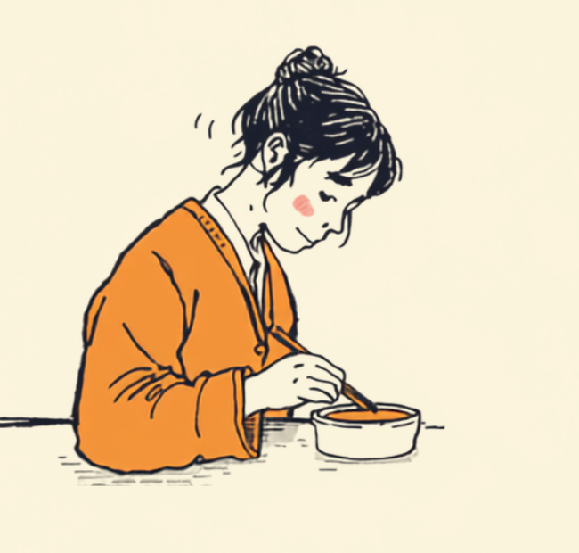

職場の昼休みが、一日の中で一番気を張る時間になる。そんな話を、摂食障害のある方からよく聞きます。食べる量、食べる速さ、残し方。誰も気にしていないはずなのに、全部見られている気がしてしまう。この記事では、摂食障害と仕事を両立させている方が抱えやすい「ランチタイムの緊張」を中心に、職場でできる工夫や使える制度を、当事者の声をもとに整理しました（2026年7月時点の情報です）。
PR


なぜ「ただのランチ」がこんなに怖いのか
周りの人にとって、お昼休みはただ休憩してご飯を食べるだけの時間です。でも摂食障害があると、その「ただの時間」が一日で一番神経を使う場面になることがあります。何をどれだけ食べるか、残したらどう思われるか、逆にたくさん食べたらどう見られるか。頭の中でずっと計算が続いているのに、それを誰にも気づかれないようにしないといけない。

周りが談笑している輪から、少し距離を置いて座ってしまう昼休み
「一緒に食べよう」と誘われることも、実はプレッシャーになります。断り続ければ「感じが悪い人」だと思われるかもしれないという不安があるし、かといって行けば、食べる姿を見られること自体がしんどい。結局、体調が悪いふりをしたり、用事があると嘘をついたりして、その場をやり過ごす人も少なくないようです。
「お昼になるたびに『今日はどう乗り切ろう』って考えていました。同僚とご飯に行けば箸の動きを見られている気がするし、一人で食べればそれはそれで『付き合い悪い』って思われそうで。結局、コンビニでゼリーだけ買って、自分の机で急いで済ませる日が増えていきました。」
20代・女性（事務職・摂食障害と通院しながら勤務）
!
摂食障害の症状の出方や、つらさを感じる場面には個人差があります。この記事の内容がそのまま当てはまるとは限らないため、気になる変化がある場合は自己判断せず主治医に相談することをお勧めします。
見えている姿と、心の中で起きていることのギャップ
摂食障害のやっかいなところは、周りからは体型の変化以外ほとんど分からないことが多い点です。過食したあとにひそかに調整している場合、体重の変化としても表に出にくく、「元気そうに見える」「普通にランチしている」という評価だけが独り歩きしてしまいます。
本人の中では、食べる前から食べた後まで、ずっと感情が動き続けています。職場ではその内側の動きを完全に隠して、平静な顔で仕事を続けなければいけません。このギャップの大きさが、孤独感を強めている一因だと言われています。
見えている部分はごくわずかで、本人はその何倍もの感情と向き合っている
「普通に見える」って言われることが、実はしんどいという声をよく聞きます。周りに悪気がなくても、本人にとっては「誰にも気づかれていない」という孤独の裏返しになることがあるからです。
ミミ
職場でできる工夫と、どこまで伝えるか
すべてをオープンにする必要はありません。ただ、ランチの場面だけ少し配慮してもらうという選択肢はあります。病名を伝えなくても、「昼は一人で過ごす時間が欲しい」「会食を伴う出張は難しいことがある」といった、業務に関わる部分だけを伝える人もいます。
職場で試している人が多い工夫
- ランチの時間帯をずらして、混雑する時間を避ける
- 「今日は作業を進めたいので」と伝えて自席で済ませる日を作っておく
- 信頼できる同僚を一人だけ作り、その人とだけ食事をともにする
- 飲み会や会食が多い部署から、業務内容を理由に異動を相談する
「毎回断るのに理由を考えるのが疲れて、思い切って仲の良い先輩にだけ『実は摂食障害があって、大勢での食事がすごく緊張する』と話しました。そうしたら『じゃあ二人で行こう』って自然に誘ってくれるようになって、それだけでランチへの恐怖がだいぶ減りました。全員に話す必要はなかったんだって、そのとき気づきました。」
30代・男性（営業職・拒食の経験あり）
職場に開示するオープン就労と、開示しないクローズ就労、どちらが正解ということはありません。オープンにすれば合理的配慮を受けやすくなりますが、体型や食事について詮索されることへの不安が残る場合もあります。クローズのままなら気を遣われない自由さがある一方、しんどさを一人で抱え続けることにもなりやすいです。どちらの負担がまだ耐えやすいか、支援者と一緒に考えていく形になることが多いようです。
i
摂食障害は「食べ方の問題」ではなく、強いストレスや自己評価の低さと結びついていることが多いとされています。本人の意志の弱さが原因ではないという前提で、周囲も本人自身も向き合うことが助けになります。
使える制度と、一人で抱えないための相談先
精神障害者保健福祉手帳という選択肢
摂食障害そのものが直接の対象区分になるわけではありませんが、症状に伴ってうつ状態や強い生活のしづらさがある場合は、精神障害者保健福祉手帳の対象になり得るとされています。等級や認定は主治医の診断書がもとになるため、気になる場合はまず主治医に相談してみるのが確実です（2026年7月時点の情報です）。手帳を取得すると、障害者雇用枠での就職や、企業側の合理的配慮を前提にした働き方を選びやすくなる場合があります。
相談できる窓口
- 主治医・かかりつけの心療内科／精神科（症状の記録や治療方針の相談）
- 摂食障害情報ポータルサイトなど、専門の相談窓口
- 職場に選任されている産業医（症状の詳細を伏せたまま働き方の相談が可能）
- 就労移行支援事業所（症状との付き合い方を含めた就労準備）
「普通に食べられないなんて情けない」と自分を責めている方によく出会いますが、それは意志の弱さの問題ではないと言われています。まずは一人で抱えている状態から、話せる相手を一人増やすところから始めてみてください。
ミミ
摂食障害の現れ方や、職場でのつらさの感じ方には個人差があります。この記事の内容がそのまま当てはまるとは限らないため、実際の対応は主治医・専門の相談窓口・支援者とよく相談しながら進めることをお勧めします（2026年7月時点の情報です）。
ランチの時間が怖いのは、あなたの心が弱いからではありません。今は「見られたくない」と感じるやり方で自分を守れているだけで、それも一つの立派な対処法です。
よくある質問
Q. 摂食障害でも障害者手帳の対象になりますか？
摂食障害そのものが直接の区分になるわけではありませんが、症状に伴ってうつ状態や強い生活のしづらさがある場合、精神障害者保健福祉手帳の対象になり得るとされています。判断は主治医の診断書がもとになるため、詳しくは主治医や自治体の障害福祉窓口にご確認ください（2026年7月時点の情報です）。
Q. 職場に摂食障害だと伝える必要はありますか？
病名を伝える義務はありません。業務に影響が出やすい場面（会食を伴う出張や飲み会など）についてだけ、必要な範囲で伝えるという考え方でも問題ないとされています。伝えるかどうか自体、本人が選べることです。
Q. ランチに誘われるのがつらい場合、どう断ればいいですか？
「今日は用事があって」「胃の調子があまり良くなくて」など、事実の一部だけを伝えて断ることも一つの方法とされています。毎回同じ理由だと不自然になりやすいため、断り方をいくつか用意しておくと気持ちが楽になったという声もあります。
Q. 摂食障害があると障害者雇用枠での就職は難しいですか？
一概には言えません。精神障害者保健福祉手帳を取得していれば障害者雇用枠での就職も選択肢になりますし、症状と付き合いながら一般枠で働き続けている人もいます。就労移行支援機関などに相談しながら検討することをお勧めします。
Q. 一人で抱え込まず相談できる窓口はどこにありますか？
主治医やかかりつけの心療内科・精神科のほか、精神保健福祉センター、摂食障害の専門相談窓口、就労移行支援事業所などが相談先になります。職場に産業医がいる場合は、症状の詳細を伏せたまま働き方の相談をすることも可能です。
この5点を頭に置いておくだけで、少し気持ちが軽くなるかもしれません
PR


一人で抱え込む前に、今の気持ちを話してみませんか
「まだ迷っている」段階でも大丈夫です。mimemimeの無料相談は、今の状況の整理から一緒に始められます。
無料で話してみる
新
新井 雅彦 ／ mimemime代表
就労支援の現場で当事者の声に向き合い続けてきた経験をもとに、生きた情報をお届けしています。